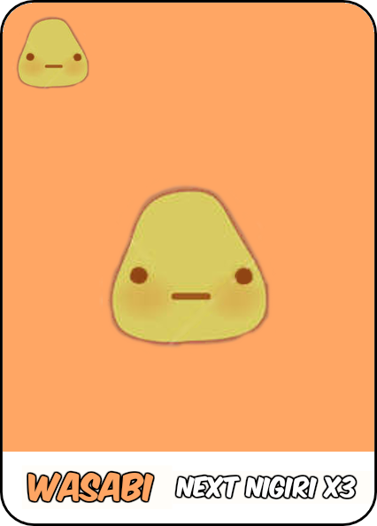
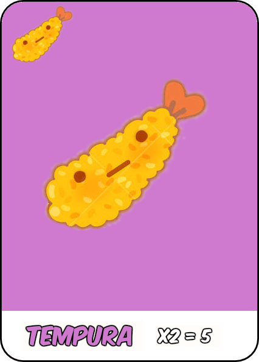

The game takes place over 3 rounds. To start a round, all players simultaneously choose any 1 card from their hands that they would like to keep and place it in their row. When each player has done this turn ends.
After each turn you pass your remaining hand to clockwise. Everyone picks up their new hands and the next turn begins. You now have a new and smaller hand to choose from.
Note: Cards in your row remain with you until the end of the round, when they are scored.
If you choose a squid, salmon or egg nigiri card, and already have a wasabi card in front of you, this is to show that the nigiri has been dipped in wasabi and has tripled in value!
Note: You may have multiple wasabi cards in front of you but only 1 nigiri card may be placed after each wasabi card.
The final remaining card of each hand is passed on. (Often this final card won’t be of much use, but sometimes an unfortunate player will be forced to leave you with something valuable).
Each player adds up the maki roll icons at the top of all their maki roll cards. The player with the most icons scores 6 points. If multiple players tie for the most, they split the 6 points evenly (ignoring any remainder) and no second place points are awarded.
The player with the second most icons scores 3 points. If multiple players tie for second place, they split the points evenly (ignoring any remainder).
A set of 2 tempura cards scores 5 points.
A single tempura card is worth nothing. You may score multiple sets of tempura in a round.
A set of 3 sashimi cards scores 10 points.
A single sashimi card or a set of only 2 is worth nothing. You may score multiple sets of sashimi in a round, although this is very hard to do.
The more dumpling cards you have, the more points you will score.
A squid nigiri scores 3 points. If it is on top of a wasabi card it scores 9 points.
A salmon nigiri scores 2 points. If it is on top of a wasabi card it scores 6 points.
An egg nigiri scores 1 point. If it is on top of a wasabi card it scores 3 points.
A wasabi card with no nigiri on it scores nothing.
Your score after each round will be displayed on your left.
New hand is dealt for each player
After the third round is scored, Pudding cards are now scored.
The player with the most pudding cards scores 6 points. If multiple players tie for the most, they split the points evenly (ignoring any remainder).
The player with the fewest pudding cards (including players with none) loses 6 points.
If multiple players tie for the least, they split the lost points evenly (ignoring any remainder).
Whoever has the most points after 3 rounds is the winner. In case of a tie, whoever has the most pudding cards wins!